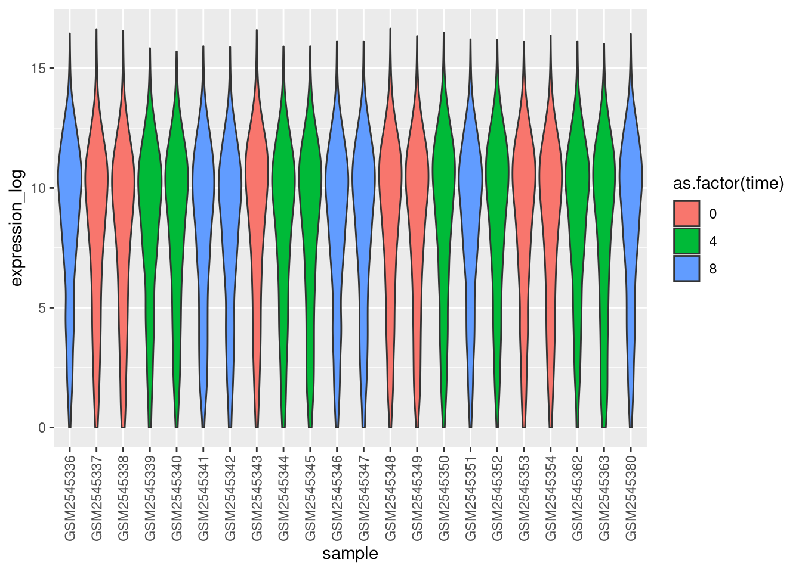
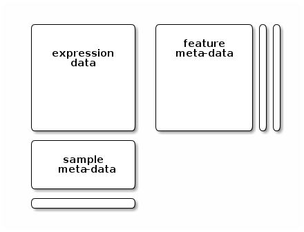

Chapter 9 Bioinformatics
As already alluded to earlier, Wikipedia defines bioinformatics as
Bioinformatics is an interdisciplinary field that develops methods and software tools for understanding biological data.
Bioinformatics is as varied as biology itself, and ranges from data analysis, to software development, computational or statistical methodological development, more theoretical work, as well as any combination of these.
9.1 Omics data
So far, we have explored broad data science techniques in R. A widespread and successful area of bioinformatics, and one that you, as a biology or biomedical science student are likely to be confronted with, is the analysis and interpretation of omics data.
).](figs/Centraldogma_nodetails.png) Figure 9.1: Information flow in biological systems (Source Wikipedia).
Figure 9.1: Information flow in biological systems (Source Wikipedia).
It is useful to define these omics data along the flow of information in biology (Figure 9.1), and define the different application domains. The technologies that focus on DNA, and the genome in particular (either whole or parts thereof) are termed genomics, and are currently based on sequencing, in particular high throughput sequencing (HTS). The domain focusing on the study of any DNA (or assiciated proteins) modification (such as for example methylation) is termed epigenetics. The study of RNA, and more specifically the quantitation of RNA levels in biological samples is termed transcriptomics, as it assays the transcription of DNA into RNA molecules. Without further specification, transcriptomics refers to the quantitation of message RNA, although one could also focus on non-coding RNAs such as micro RNAs. HTS is currently the technology of choice for any transcriptomics study, while a decade ago, prior to the development of RNA sequencing (called RNA-Seq), microarrays were widely used. Proteomics focuses on the identification and quantitation of proteins, and can also expand into the study of protein interactions, post-translational modifications or sub-cellular localisation of proteins. Further downstream of proteins, small molecules or lipids can also be assayed under the umbrella terms of metabolomics and lipidomics. The technology of choice for protein, lipids or smaller metabolites is mass spectrometry.
In the next couple of sections, some important concepts related to omics data and their analysis are repeated and emphasised.
High throughput
By it very nature, omics data is high throughput. The goal is to measure all, or as many as possible molecules of an omics-domain as possible: sequence the whole genome or all exomes; identify all epigenetic histone modifications (defining the compactness of DNA and hence it’s accessibility by the transcription machinery); identify and quantify as much as possible from the complete proteomics; etc. As a result, omics data is both large in size and complex in nature, and requires dedicated software and analysis methods to be processed, analysed to infer biologically relevant patterns.
Raw and processed data
The omics data that are produced by the instruments are called raw data, and their size (generally large), the types of file, and structure will depend on the technology that is used. Raw data need to be processed using dedicated software before obtaining data that can be mapped to the biology that is measured. Below we illustrate two such examples using Sanger sequencing and mass spectrometry.
In Sanger sequencing (Figure 9.2), DNA is labelled using fluorophores, and different nucleotides are marked with different colours. Upon acquisition, light signal is acquired and recording of the different colours can be used to reconstruct the DNA sequence.
Figure 9.2: Processing Sanger sequencing data to a string. (Source BiteSizeBio).
).](figs/sanger-sequencing.jpg)
In mass spectrometry, charged molecules are separated based on their mass-to-charge (M/Z) ratio and their intensities recorded to produce a spectrum. In proteomics, the molecules that are assayed are protein fragments called peptides. Upon fragmentation of peptides, the different between the M/Z peaks of the peptide fragment ions can be used to reconstruct the peptide sequence (Figure 9.3).
Figure 9.3: De novo peptide sequencing using mass spectrometry. (Source Creative Proteomics).
).](figs/de-novo-pep-sequencing.jpg)
The size and computational cost of processing raw data often require more serious hardware, including disk space, computer clusters with 100s or more of compute nodes and/or access to high amounts of memory (RAM).
Processed data themselves often need to be further transformed to account for a variety of noise that is inheritent to sample collection, preparation and measurement acquisition. Data processing and transformation will be explored in detail in subsequent course such as Omics data analysis (WSBIM2122).
9.2 Metadata and experimental design
The acquired data, even once processed, is still of very little use when it comes to understanding biology. Before samples are collected and data are generated, it is essential to carefully design a question of interest (research hypothesis) and the experiement that will allow to answer it. For example, if we want to understand the effect of a particular drug on cancer cells, and more specifically understand the effect on the transcription of all the expressed genes, on would need to measure gene expression (using for example RNA-Seq) in cancer cells in presence and absence of that drug. The table below describes a simple experimental design where 3 conditions (control, drug at a concentrations of 1 and 5) have been simultaneously processed and measured by the same operator in 4 replicate.
| sample | operator | date | group | concentration | replicate |
|---|---|---|---|---|---|
| S1 | Kevin | 2019-03-02 | CTRL | 0 | 1 |
| S2 | Kevin | 2019-03-02 | CTRL | 0 | 2 |
| S3 | Kevin | 2019-03-02 | CTRL | 0 | 3 |
| S4 | Kevin | 2019-03-02 | CTRL | 0 | 4 |
| S5 | Kevin | 2019-03-02 | DRUG | 1 | 1 |
| S6 | Kevin | 2019-03-02 | DRUG | 1 | 2 |
| S7 | Kevin | 2019-03-02 | DRUG | 1 | 3 |
| S8 | Kevin | 2019-03-02 | DRUG | 1 | 4 |
| S9 | Kevin | 2019-03-02 | DRUG | 5 | 1 |
| S10 | Kevin | 2019-03-02 | DRUG | 5 | 2 |
| S11 | Kevin | 2019-03-02 | DRUG | 5 | 3 |
| S12 | Kevin | 2019-03-02 | DRUG | 5 | 4 |
We have seen a much more complex experimental desing, involving many
more samples with the clinical1 data.
## # A tibble: 516 x 15
## patientID tumor_tissue_si… gender age_at_diagnosis vital_status days_to_death
## <chr> <chr> <chr> <int> <int> <int>
## 1 TCGA-05-… lung male 24532 0 NA
## 2 TCGA-05-… lung male 24868 0 NA
## 3 TCGA-05-… lung male 24411 0 NA
## 4 TCGA-05-… lung male 25660 0 NA
## 5 TCGA-05-… lung female 21430 0 NA
## 6 TCGA-05-… lung male 27971 1 0
## 7 TCGA-05-… lung male 28094 1 303
## 8 TCGA-05-… lung female 17471 0 NA
## 9 TCGA-05-… lung female 20819 1 244
## 10 TCGA-05-… lung male 27881 0 NA
## # … with 506 more rows, and 9 more variables: days_to_last_followup <int>,
## # pathologic_stage <chr>, pathology_T_stage <chr>, pathology_N_stage <chr>,
## # pathology_M_stage <chr>, smoking_history <chr>,
## # number_pack_years_smoked <dbl>, year_of_tobacco_smoking_onset <int>,
## # stopped_smoking_year <int>When performing experiments, measurements should also be repeated several times (typically at least three), to quantify the overall variability (technical and biological) in the measured variables and, eventually, identify changes that relate to the conditions of interest (for example differences in genes expression in the presence or absence of the drug).
Figure 9.4: Distribution of the expression of the genes A1CF, BRCA1 and TP53 under the control (no drug) and drug at concentrations 1 and 5.
9.3 The Bioconductor project
The Bioconductor was initiated by Robert Gentleman (R. C. Gentleman et al. (2004)Gentleman, Robert C., Vincent J. Carey, Douglas M. Bates, Ben Bolstad, Marcel Dettling, Sandrine Dudoit, Byron Ellis, et al. 2004. “Bioconductor: Open Software Development for Computational Biology and Bioinformatics.” Genome Biol 5 (10): –80. https://doi.org/10.1186/gb-2004-5-10-r80.;R. C. Gentleman et al. (2004)Gentleman, Robert C., Vincent J. Carey, Douglas M. Bates, Ben Bolstad, Marcel Dettling, Sandrine Dudoit, Byron Ellis, et al. 2004. “Bioconductor: Open Software Development for Computational Biology and Bioinformatics.” Genome Biol 5 (10): –80. https://doi.org/10.1186/gb-2004-5-10-r80.), one of the two creators of the R language, and centrally offers dedicated R packages for bioinformatics.
Bioconductor provides tools for the analysis and comprehension of high-throughput genomic data. Bioconductor uses the R statistical programming language, and is open source and open development. It has two releases each year, and an active user community.
Figure 9.5: The Bioconductor web page.

Bioconductor packages are managed installed using a dedicated package,
namely BiocManager, that can be installed from CRAN with
install.packages("BiocManager")Individuals package such as SummarizedExperiment (see below for
details), DESeq2 (for transcriptomics), Spectra (for mass
spectrometry), xcms (metabolomics), … can then be installed with
BiocManager::install.
BiocManager::install("SummarizedExperiment")
BiocManager::install("DESeq2")
BiocManager::install("Spectra")
BiocManager::install("xcms")Note that we can also use that same function to install packages from GitHub:
BiocManager::install("UCLouvain-CBIO/rWSBIM1207")9.4 Omics data containers
Data in bioinformatics is often more complex than the basic data types we have seen so far. In such situations, developers define specialised data containers (termed classes that) that match the properties of the data they need to handle.
An example of general data architecture, that is used across many omics domains in Bioconductor is represented below:
Figure 9.6: A data structure to store quantitative data, features (rows) annotation, and samples (column) annotations..
An assay data slot containing the quantitative omics data (expression data), stored as a
matrix. Features (genes, transcripts, proteins, …) are defined along the rows and samples along the columns.A sample metadata slot containing sample co-variates, stored as a table (
data.frameorDataFrame). This dataframe is stored with rows representing samples and sample covariate along the columns, and its rows match the expression data columns exactly.A feature metadata slot containing feature co-variates, stored as table annotated (
data.frameorDataFrame). This dataframe’s rows match the expression data rows exactly.
The coordinated nature of the high throughput data guarantees that the dimensions of the different slots will always match (i.e the columns in the expression data and then rows in the sample metadata, as well as the rows in the expression data and feature metadata) during data manipulation. The metadata slots can grow additional co-variates (columns) without affecting the other structures.
To illustrate such an omics data container, we’ll use a variable of
class SummarizedExperiment. Below, we load the cptac_se dataset
from the rWSBIM1322 package.
library("SummarizedExperiment")
library("rWSBIM1322")
data(cptac_se)
class(cptac_se)## [1] "SummarizedExperiment"
## attr(,"package")
## [1] "SummarizedExperiment"cptac_se## class: SummarizedExperiment
## dim: 4051 6
## metadata(3): MSnbaseFiles MSnbaseProcessing MSnbaseVersion
## assays(1): ''
## rownames(4051): AAAALAGGK AAAALAGGKK ... YYPSYIVSK YYSISSSSLSEK
## rowData names(3): Proteins Sequence nNA
## colnames(6): 6A_7 6A_8 ... 6B_8 6B_9
## colData names(3): group sample nNAThe object contains data for4051 features (peptides in this case) and 6 samples.
dim(cptac_se)## [1] 4051 6nrow(cptac_se)## [1] 4051ncol(cptac_se)## [1] 6The samples (columns) and rows (protein features) are named:
colnames(cptac_se)## [1] "6A_7" "6A_8" "6A_9" "6B_7" "6B_8" "6B_9"head(rownames(cptac_se))## [1] "AAAALAGGK" "AAAALAGGKK" "AAADALSDLEIK" "AAADALSDLEIKDSK"
## [5] "AAALVNK" "AAAQDGYVPQR"tail(rownames(cptac_se))## [1] "YVVLASHLGR" "YVVLASHLGRPNGER" "YWGVASFLQK" "YYGGNEIIDK"
## [5] "YYPSYIVSK" "YYSISSSSLSEK"Using this data structure, we can access the expression matrix with
the assay function, the feature metadata with the rowData function,
and the sample metadata with the colData function:
head(assay(cptac_se))## 6A_7 6A_8 6A_9 6B_7 6B_8 6B_9
## AAAALAGGK 2441300 1220000 1337600 2850900 935580 1606200
## AAAALAGGKK 1029200 668040 638990 777030 641270 562840
## AAADALSDLEIK 515460 670780 712140 426580 620510 737780
## AAADALSDLEIKDSK 331130 420900 365560 329250 380820 414490
## AAALVNK 4266200 1220100 1347200 3700300 1023200 1503000
## AAAQDGYVPQR 94675 62831 105640 81974 68637 91846head(rowData(cptac_se))## DataFrame with 6 rows and 3 columns
## Proteins Sequence nNA
## <character> <character> <integer>
## AAAALAGGK sp|Q3E792|RS25A_YEAS.. AAAALAGGK 0
## AAAALAGGKK sp|Q3E792|RS25A_YEAS.. AAAALAGGKK 0
## AAADALSDLEIK sp|P09938|RIR2_YEAST AAADALSDLEIK 0
## AAADALSDLEIKDSK sp|P09938|RIR2_YEAST AAADALSDLEIKDSK 0
## AAALVNK sp|P05030|PMA1_YEAST AAALVNK 0
## AAAQDGYVPQR sp|P27692|SPT5_YEAST AAAQDGYVPQR 0colData(cptac_se)## DataFrame with 6 rows and 3 columns
## group sample nNA
## <character> <integer> <integer>
## 6A_7 6A 7 4669
## 6A_8 6A 8 5388
## 6A_9 6A 9 5224
## 6B_7 6B 7 4651
## 6B_8 6B 8 5470
## 6B_9 6B 9 5207The nNA variables above indicate the number of missing values (NA
present in the respective samples and features.
► Question
Verify that the expression data dimensions match with number of rows and columns in the feature and sample data.
► Solution
We can use the [ operator to subset the whole object: all parts
thereof will be subset correctly.
cptac_se2 <- cptac_se[c(1, 3, 5), c(2, 4)]
dim(cptac_se2)## [1] 3 2head(assay(cptac_se2))## 6A_8 6B_7
## AAAALAGGK 1220000 2850900
## AAADALSDLEIK 670780 426580
## AAALVNK 1220100 3700300We can also add information with:
colData(cptac_se)$group2 <- rep(c('X', 'Y', 'Z'), each = 2)
colData(cptac_se)## DataFrame with 6 rows and 4 columns
## group sample nNA group2
## <character> <integer> <integer> <character>
## 6A_7 6A 7 4669 X
## 6A_8 6A 8 5388 X
## 6A_9 6A 9 5224 Y
## 6B_7 6B 7 4651 Y
## 6B_8 6B 8 5470 Z
## 6B_9 6B 9 5207 Z9.5 Bioconductor data infrastructure
An essential aspect that is central to Bioconductor and its success is the availability of core data infrastructure that is used across packages. Package developers are advised to make use of existing infrastructure to provide coherence, interoperability and stability to the project as a whole.
Here are some core classes, taken from the Common Bioconductor Methods and Classes page:
Importing
- GTF, GFF, BED, BigWig, etc., - rtracklayer
::import() - VCF – VariantAnnotation
::readVcf() - SAM / BAM – Rsamtools
::scanBam(), GenomicAlignments:readGAlignment*() - FASTA – Biostrings
::readDNAStringSet() - FASTQ – ShortRead
::readFastq() - Mass spectrometry data (XML-based and peaklist formats) – MSnbase
::readMSData()and Spectra::Spectra()
Common Classes
- Rectangular feature x sample data – SummarizedExperiment
::SummarizedExperiment()(RNAseq count matrix, microarray, proteomics, …) - Genomic coordinates – GenomicRanges
::GRanges()(1-based, closed interval) - DNA / RNA / AA sequences – Biostrings
::*StringSet() - Gene sets – GSEABase
::GeneSet()GSEABase::GeneSetCollection() - Multi-omics data – MultiAssayExperiment
::MultiAssayExperiment() - Single cell data – SingleCellExperiment
::SingleCellExperiment() - Mass spectrometry data – MSnbase
::MSnExp()and Spectra::Spectra()
9.7 Exercises
► Question
Install a Bioconductor package of your choice, discover the vignette(s) it offers, open one, and extract the R code of it.
Find a package that allows reading raw mass spectrometry data and identify the specific function. Either use the biocViews tree, look for a possible workflow, or look in the common methods and classes page on the Bioconductor page.
► Question
Extract the quantitative information for the peptides
AIGVLPQLIIDR,NLDAAPTLRandYGLNHVVSLIENKKfor samples6A_7and6B_8. Subsetting works as we have seen fordata.framesin chapter 3.Look and interpret the experimental design stored in the sample metadata of this experiment. To help you out, you can also read its documentation.
What is the average expression of
LSAAQAELAYAETGAHDKin the groups6Aand6B?Calculate the average expression of all peptides belonging to protein
P02753ups|RETBP_HUMAN_UPSfor each sample. You can indentify which peptides to use by looking for that protein in the object’s rowData slot.
► Question
- To be able to access the data for this exercise, make sure you have
rWSBIM1207version 0.1.5 or later. If needed, install a more recent version with
BiocManager::install("UCLouvain-CBIO/rWSBIM1207")Import the data from two tab-separated files into R. The full paths to the two files can be accessed with
kem.tsv(). Read?kemfor details on the content of the two files. In brief, thekem_counts.tsvfile contains RNA-Seq expression counts for 13 genes and 18 samples andkem_annot.tsvcontains annotation about each sample. Read the data into twotibblesnameskemandannotrespectively and familiarise yourself with the content of the two new tables.Convert the counts data into a long table format and annotate each sample using the experimental design.
Identity the three transcript identifiers that have the highest expression count over all samples.
Visualise the distribution of the expression for the three transcripts selected above in cell types A and B under both treatments.
For all genes, calculate the mean intensities in each experimental group (as defined by the
cell_typeandtreatmentvariables).Focusing only on the three most expressed transcripts and cell type A, calculate the fold-change induced by the treatment. The fold-change is the ratio between the average expressions in two conditions.
Page built: 2021-03-22 using R version 4.0.3 Patched (2021-01-18 r79847)